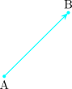

26.1 Introduction
A vector is a line segment which has a direction and magnitude.

\(\overrightarrow {AB}\) is called a vector because it has both direction and magnitude.
Displacement is one of the most common types of vectors.
\[\overrightarrow {PQ} + \overrightarrow {QR} = \overrightarrow {PR}\]
Questions on this section
Stuck on something here? Ask below and it stays attached to this topic.